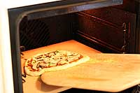

What to do when your 8-year old nephew comes to visit? Make pizza, of course! The following method I patched together from recipes in both Joy of Cooking and Cook's Illustrated The Best Recipe. Next time I'll be a bit more patient with stretching out the dough so I can get it even thinner.
In the large bowl of a heavy duty electric mixer (such as a Kitchen Aid), add the warm water. Sprinkle on the yeast and let sit for 5 minutes until the yeast is dissolved. Stir to dissolve completely if needed at the end of 5 minutes.
Attach a mixing paddle to the mixer. Mix in the olive oil, flour, salt and sugar on low speed for about a minute. Remove the mixing paddle and replace with a dough hook. Knead using the mixer and dough hook, on low to medium speed, until the dough is smooth and elastic, about 10 minutes. If you don't have a mixer, you can mix and knead by hand.
Place ball of dough in a bowl that has been coated lightly with olive oil. Turn the dough around in the bowl so that it gets coated with the oil. Cover with plastic wrap. Let sit in a warm place (75-85°F) until it doubles in size, about 1 to 1 1/2 hours. If you don't have a warm spot in the house you can heat the oven to 150 degrees, and then turn off the oven. Place the bowl of dough in this warmed oven to rise.
At this point, if you want to make ahead, you can freeze the dough in an airtight container for up to two weeks.
Place a pizza stone on a rack in the lower third of your oven. Preheat the oven to 450°F for at least 30 minutes, preferably an hour.
Remove the plastic cover from the dough and punch the dough down so it deflates a bit. Divide the dough in half. Form two round balls of dough. Place each in its own bowl, cover with plastic and let sit for 10 minutes.
Prepare your desired toppings. Note that you are not going to want to load up each pizza with a lot of toppings as the crust will end up not crisp that way. About a third a cup each of tomato sauce and cheese would be sufficient for one pizza. One to two mushrooms thinly sliced will cover a pizza.
Working one ball of dough at a time, take one ball of dough and flatten it with your hands on a slightly floured work surface. Starting at the center and working outwards, use your fingertips to press the dough to 1/2-inch thick. Turn and stretch the dough until it will not stretch further. Let the dough relax 5 minutes and then continue to stretch it until it reaches the desired diameter - 10 to 12 inches. Use your palm to flatten the edge of the dough where it is thicker. You can pinch the very edges if you want to form a lip.
Brush the top of the dough with olive oil (to prevent it from getting soggy from the toppings). Use your finger tips to press down and make dents along the surface of the dough to prevent bubbling. Let rest another 5 minutes.
Repeat with the second ball of dough.
Lightly sprinkle your pizza peel (or flat baking sheet) with corn meal. Transfer one prepared flattened dough to the pizza peel. If the dough has lost its shape in the transfer, lightly shape it to the desired dimensions.
Spoon on the tomato sauce, sprinkle with cheese, and place your desired toppings on the pizza.
Sprinkle some cornmeal on the baking stone in the oven. Bake pizza one at a time until the crust is browned and the cheese is golden, about 10-15 minutes. If you want, toward the end of the cooking time you can sprinkle on a little more cheese.
